Number parts¶
Complex components (fabs(), re(), im(), arg())¶
- mpmath.functions.fabs(x)¶
Returns the absolute value of
 , 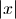. Unlike abs(),
fabs() converts non-mpmath numbers (such as int)
into mpmath numbers:
, 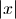. Unlike abs(),
fabs() converts non-mpmath numbers (such as int)
into mpmath numbers:>>> from mpmath import * >>> fabs(3) mpf('3.0') >>> fabs(-3) mpf('3.0') >>> fabs(3+4j) mpf('5.0')
- mpmath.functions.re(x)¶
Returns the real part of
, 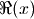. Unlike x.real,
re() converts to a mpmath number:>>> from mpmath import * >>> re(3) mpf('3.0') >>> re(-1+4j) mpf('-1.0')
- mpmath.functions.im(x)¶
Returns the imaginary part of
, 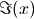. Unlike x.imag,
im() converts to a mpmath number:>>> from mpmath import * >>> im(3) mpf('0.0') >>> im(-1+4j) mpf('4.0')
- mpmath.functions.arg(*args, **kwargs)¶
Computes the complex argument (phase) of
, defined as the
signed angle between the positive real axis and in the
complex plane:>>> from mpmath import * >>> mp.dps = 15 >>> print arg(3) 0.0 >>> print arg(3+3j) 0.785398163397448 >>> print arg(3j) 1.5707963267949 >>> print arg(-3) 3.14159265358979 >>> print arg(-3j) -1.5707963267949
The angle is defined to satisfy 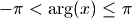 and with the sign convention that a nonnegative imaginary part results in a nonnegative argument.
The value returned by arg() is an mpf instance.
Complex conjugate (conj())¶
- mpmath.functions.conj(x)¶
Returns the complex conjugate of
,  . Unlike
x.conjugate(), im() converts to a mpmath number:
. Unlike
x.conjugate(), im() converts to a mpmath number:>>> from mpmath import * >>> conj(3) mpf('3.0') >>> conj(-1+4j) mpc(real='-1.0', imag='-4.0')
Floor and ceiling functions (floor(), ceil())¶
- mpmath.functions.floor(x, **kwargs)¶
Computes the floor of
, 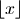, defined as
the largest integer less than or equal to :>>> from mpmath import * >>> print floor(3.5) 3.0
Note: floor() returns a floating-point number, not a Python int. If is too large to be represented exactly at the present working precision, the result will be rounded, not necessarily in the floor direction.
- mpmath.functions.ceil(x, **kwargs)¶
Computes the ceiling of
, 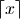, defined as
the smallest integer greater than or equal to :>>> from mpmath import * >>> print ceil(3.5) 4.0
Note: ceil() returns a floating-point number, not a Python int. If is too large to be represented exactly at the present working precision, the result will be rounded, not necessarily in the ceiling direction.
Modulo (modf())¶
- mpmath.functions.modf(x, y)¶
Converts
and  to mpmath numbers and returns 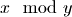.
For mpmath numbers, this is equivalent to x % y.
to mpmath numbers and returns 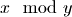.
For mpmath numbers, this is equivalent to x % y.>>> from mpmath import * >>> mp.dps = 15 >>> print modf(100, pi) 2.61062773871641
You can use modf() to compute fractional parts of numbers:
>>> print modf(10.25, 1) 0.25
Exponent decomposition (ldexp(), frexp())¶
- mpmath.functions.ldexp(x, n)¶
Computes 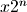 efficiently. No rounding is performed. The argument
must be a real floating-point number (or
possible to convert into one) and  must be a Python int.
must be a Python int.>>> from mpmath import * >>> ldexp(1, 10) mpf('1024.0') >>> ldexp(1, -3) mpf('0.125')
- mpmath.functions.frexp(x)¶
Given a real number
, returns 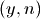 with 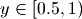,
a Python integer, and such that 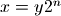. No rounding is
performed.>>> from mpmath import * >>> frexp(7.5) (mpf('0.9375'), 3)
Vector components (hypot(), atan2())¶
- mpmath.functions.hypot(x, y)¶
- Computes the Euclidean norm of the vector 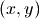, equal
to 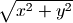. Both and must be real.
- mpmath.functions.atan2(y, x)¶
Computes the two-argument arctangent, 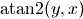, giving the signed angle between the positive
-axis and the
point in the 2D plane. This function is defined for
real and only.The two-argument arctangent essentially computes 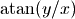, but accounts for the signs of both
and to give the angle for the correct quadrant. The
following examples illustrate the difference:>>> from mpmath import * >>> mp.dps = 15 >>> print atan2(1,1), atan(1/1.) 0.785398163397448 0.785398163397448 >>> print atan2(1,-1), atan(1/-1.) 2.35619449019234 -0.785398163397448 >>> print atan2(-1,1), atan(-1/1.) -0.785398163397448 -0.785398163397448 >>> print atan2(-1,-1), atan(-1/-1.) -2.35619449019234 0.785398163397448
The angle convention is the same as that used for the complex argument; see arg().